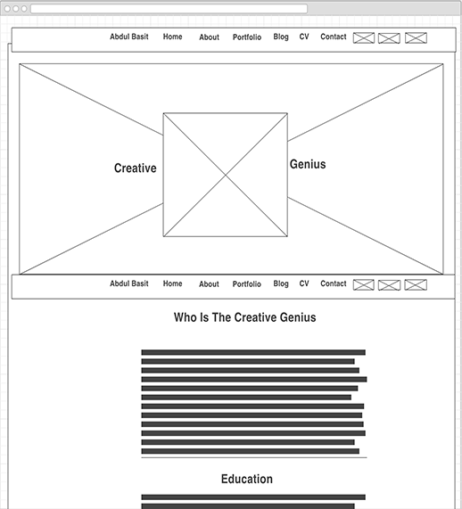
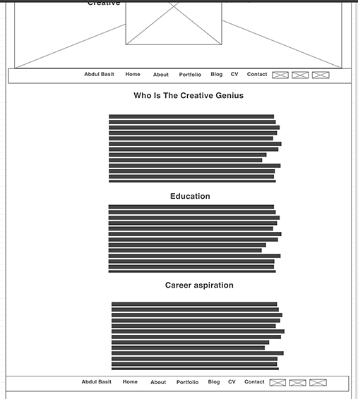
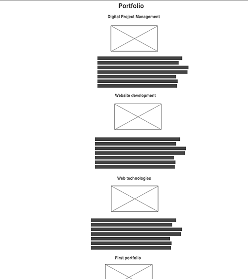

There has been the use of multiple tools for the website in different parameters such as research and design, growth and development etc. for the introduction of the website. There has been the use of articles and SEO for the research activity as it offers the best approach for information database. (Englander, 2000)
With the complete attention and careful interpretation, different articles and themes are being used for the front end of the website and it is being designed and managed with the help of programming languages such as HTML, CSS and JavaScript. The complete understanding of programming and languages has been the great help for me. Along with the same, the additional notes on different practices about the coding languages and programming for W3C helps to meet the error less website design. Thus, while looking for website optimization, Google and other search engine sites, the coding level for W3C standards are found over multiple websites with coding challenges and issues. (Baker, 2007)
Compilation with W3C standards has been very helpful. The use of coding develops the website domain along with the authority of the page. This creates the best outcome and while submission of the website on the famous search engines along with the coding errors and broken links, few of the website pages might not be readable and therefore, there is no registration of the content as well as the keywords. (Baker, 2007)
Different search engines such as Google also believes in website penalty which has broken links and errors on coding or duplicity in contents. When there is a compilation of website and it is being validated by the validator called as W3C, the errors are being identified and it can be reduced before the submission on search engines.
  There has been the use of cascading sheet, java script and hypertext markup language to design the website. HTML and CSS were opted to deal with the multiple options for designing the website and to focus on the needs of the design according to the designer. Thus, HTML can be mixed with other languages such as JavaScript for the same functions as HTML is useful for meeting with the designs. With the use of CSS, time for rectifications can be saved. The websites developed from CSS and HTML are easy and fast loading. Therefore, there is a use of CSS for the design of portfolio. (Capala, 2015)
Google gets it approved as CSS is called to a known & clear structure of coding. It might be easily understandable and readable with the help of search engines. Therefore, the application of CSS is based on content code that enhances the coding. Content plays a major role in SEO and CSS has been very helpful.
There were comments in the code with respect to the knowledge on the coding to explain the major purpose. Thus, the code was filled with the strong practices of SEO for strong visibility on search engine network. CSS has been helpful to offer the multiple tool compatibility by forming the website. Thus, the response on the coding helps to create the better responses of the website that can directly resize as per the desktop, tablet or phone. Therefore, there is a use of HTML and CSS to design the website portfolio. (Eric, 2015)
There is also the assurance to use the tool called as keyword planner for Google where accurate keywords are being used for every page. Thus there is implementation of my portfolio website page. This is important to attain the best ranking on Google and other search engine networks for the keywords that help the employers to seek for the own portfolio and to enhance the options for jobs. (McDonald, 2015)
The website will be introduced on the free space on 34sp.com. There is the upload option of file into the root base of the hosting account that forms on 34sp.com. This takes the website goes live. This can be tested for the compatibility and responsiveness on multiple tools. Therefore, the designing as well as testing of the website is done on the basis of compatibility of different browsers and operating systems. It helps to run the website perfectly fine and free of errors.